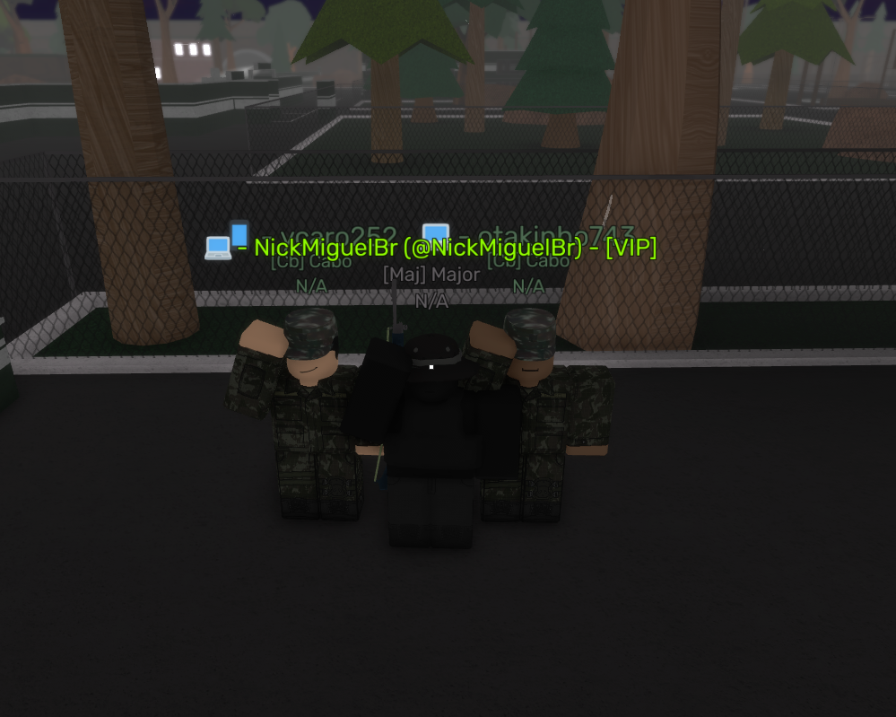

Notícias
Formatura da ESA
Em um momento de pompa e celebração, a Escola de Sargentos das Armas (ESA) teve início no dia 19/04 às 20:00, no horário de Brasília. Os alunos Otakinho e Ycrazy demonstraram excelente habilidade na execução do texto, evidenciando um alto padrão de gramática e clareza. A atmosfera solene do evento envolveu todos os presentes, desde os formandos até seus familiares e instrutores, em uma atmosfera de orgulho e realização. Cada passo dado ao som solene da marcha representou não apenas o término de uma jornada, mas também o começo de uma nova etapa repleta de desafios e oportunidades.